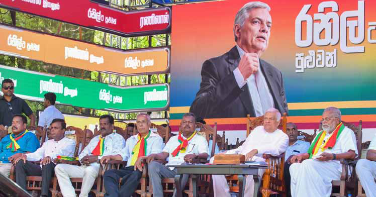
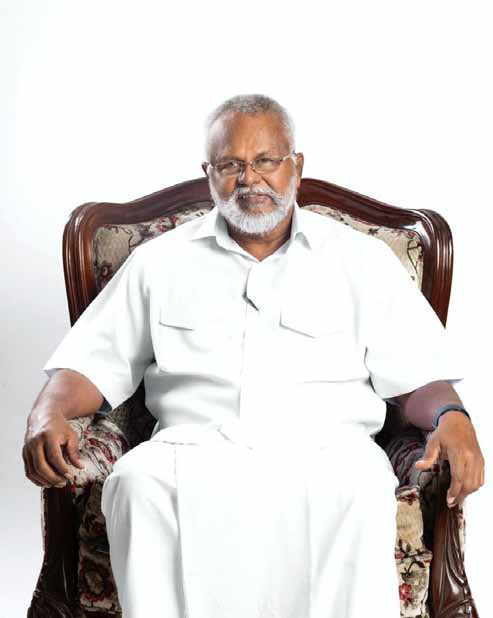
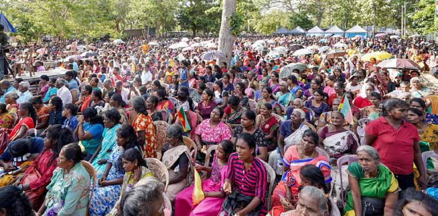
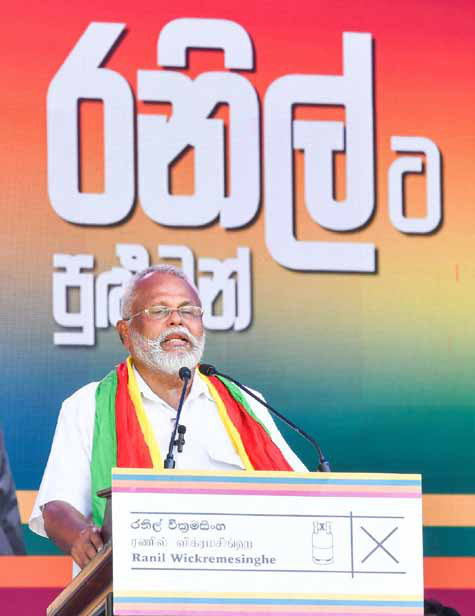

F isheries Minister Douglas Devananda, founder and secretary of the Eelam People's Democratic Party (EPDP), has achieved a remarkable feat unmatched by any Tamil politician in Sri Lanka's history—completing 30 uninterrupted years in Parliament. On August 16th, he celebrated this milestone, underscoring his enduring influence in the Tamil political landscape. Now, with his party firmly backing President Ranil Wickremesinghe's candidacy, we sat down with Minister Devananda to gain his insights into this pivotal moment and the evolving political landscape.
F isheries Minister Douglas Devananda, founder and secretary of the Eelam People's Democratic Party (EPDP), has achieved a remarkable feat unmatched by any Tamil politician in Sri Lanka's history—completing 30 uninterrupted years in Parliament. On August 16th, he celebrated this milestone, underscoring his enduring influence in the Tamil political landscape. Now, with his party firmly backing President Ranil Wickremesinghe's candidacy, we sat down with Minister Devananda to gain his insights into this pivotal moment and the evolving political landscape.
Jaffna Monitor hellojaffnamonitor@gmail.com 14 F isheries Minister Douglas Devananda, founder and secretary of the Eelam People's Democratic Party (EPDP), has achieved a remarkable feat unmatched by any Tamil politician in Sri Lanka's history—completing 30 uninterrupted years in Parliament. On August 16th, he celebrated this milestone, underscoring his enduring influence in the Tamil political landscape. Now, with his party firmly backing President Ranil Wickremesinghe's candidacy, we sat down with Minister Devananda to gain his insights into this pivotal moment and the evolving political landscape. You were among the earliest to endorse President Ranil Wickremesinghe for the upcoming election, even before other political players made their move. What makes you confident that the Tamil community should rally behind him, and how do you plan to inspire their support at the polls? My relationship with Ranil Wickremesinghe spans decades, dating back to 1990 when I returned to Colombo from India to participate in the National Political Stream. Even in his speeches, he humorously claims that he 'trained' me. While some might mistake this for military training, it was purely political. Over the years, I have met with him numerous times to address the pressing concerns of our people, which has led to a long-standing, trust- based political relationship. There were, of course, interruptions in our association due to changes in government. However, three years ago, when the country was on the brink of economic collapse, then-President Gotabaya Rajapaksa called upon many prominent leaders to form the government. Among those invited were leaders who are now contesting the presidential election, yet none were willing to take on the responsibility, fearing political consequences. They were afraid that if they took on the responsibility, they too would fall into the political abyss, and their political careers would be ruined. But President Ranil Wickremesinghe, with courage and a sense of duty towards the nation and its people, stepped forward and has since led the country from darkness towards light. I believe that the majority of the people in this country have realized this. Ever since the current President, Ranil Wickremesinghe, took on the role, I expressed my belief that, given the circumstances at the time, he was the only one capable of leading the country out of the economic collapse and towards recovery. I was the first to applaud him during the initial cabinet meeting, a gesture of my faith in his ability. That faith has not been misplaced. I've had the privilege of walking alongside President Wickremesinghe during this challenging time, and I firmly believe that, under his leadership, the country is headed toward a future of progress and prosperity. I am confident that ordinary citizens see this too—that they've witnessed his courage and leadership when it was most needed. And I trust that, when it comes time to vote, many will remember who stood by them and helped turn the tide. BY: Our Reporter
Jaffna Monitor hellojaffnamonitor@gmail.com 15 How can you logically conclude that Tamils will vote for Ranil Wickremesinghe? Ranil Wickremesinghe has long been a familiar and welcoming figure to the Tamil community. His history of engaging with Tamil concerns has fostered trust over the years. A clear example of this connection was during the 2019 Sri Lankan presidential election. While Sajith Premadasa was the UNP's candidate, Ranil personally took charge of overseeing the campaign in the Northern and Eastern provinces, where the majority of Tamils reside. This action strongly suggests that Ranil understands the concerns of the Tamil people and resonates with their aspirations. During the Kilinochchi election campaign, just days before the vote, we organized a political rally that drew over 5,000 attendees—an unprecedented show of support in the region. Such a large turnout in Tamil areas reflects the deep rapport Ranil has cultivated with the Tamil electorate over the years. Reports indicate that many participants from the Aragalaya movement, which protested against former President Gotabaya Rajapaksa, are now said to be supporting the National People's Power (NPP) and its presidential candidate, Anura Kumara Dissanayake. Some suggest that he is gaining momentum, particularly in the southern regions of the country. How do you perceive this potential shift, and what impact could it have? There's certainly a lot of buzz around this shift, but if we look at past election data, the NPP has historically secured only a small percentage of the vote, around 3-4%. Whether this newfound support can translate into a majority sufficient to win the presidency remains to be seen. It's still unclear if this momentum is sustainable. The Aragalaya protests arose from widespread frustration over the lack of essential goods— food, fuel, medicine—driving people to the streets. Today, many of those pressing issues have been addressed, and life has largely returned to normal. The immediate crisis is no longer as acute, and stability is gradually returning. Ranil Wickremesinghe stepped in when the country was on the brink of collapse. There were shortages of almost everything, with long queues for essentials. Under his leadership, those shortages have been addressed, and the country has regained a level of normalcy. Additionally, the Peoples' Struggle Alliance, formed by Aragalaya activists, has named Lawyer Nuwan Bopage as their presidential candidate. This shows that not all Aragalaya protesters are aligning with the NPP, so the assumption that the entire movement is supporting Anura Kumara Dissanayake is not entirely accurate. How has your transition from involvement in the armed struggle to joining the National Political Stream shaped your perspective on national reconciliation and the leadership needed to address the challenges faced by the Tamil community? As for my journey, my involvement in the
Jaffna Monitor hellojaffnamonitor@gmail.com 16 armed struggle was not born out of impulsive emotion; it stemmed from a long history of grievances. However, over time, I realized that armed conflict wouldn't bring the Tamil people the justice they deserve. This realization led me to join the National Political Stream. Our guiding principle has always been clear: "We will act and enable others to act." This isn't just a slogan; it embodies our approach to national reconciliation. We tell our people, "Trust us, walk with us, and we will lead you forward, helping to resolve the issues you face." This is not empty talk—it's a philosophy we live by, laying the foundation for real, lasting change. Unlike some other Tamil politicians, I have never returned to my community, claiming, "The Sinhalese leaders deceived us." I don't believe in making excuses or shifting blame. How do you view the approach of other Tamil political parties in addressing the community's issues? Do you believe they are genuinely working towards solutions, or are they keeping these problems alive for political gain, as seen in past events like the Thimpu talks? Unfortunately, many Tamil political parties continue to operate in a way that prioritizes their own political gain over genuinely addressing the community's challenges. A prime example of this can be seen during the Thimpu talks. At that time, I was with the EPRLF, and we, along with the other armed groups, participated in the negotiations without fully understanding how the outside world or international politics functioned. Our goal was to disrupt the process, and we put forth demands we knew the Sri Lankan government wouldn't accept, aside from perhaps one. However, the troubling reality is that even today, Tamil politicians—who now understand the dynamics of global politics—still follow a similar approach. They keep Tamil issues President Ranil Wickremesinghe and Minister Douglas Devananda greeting the crowd gathered at EPDP's public campaign in Kilinochchi, in support of the presidential candidate Ranil Wickremesinghe.

Jaffna Monitor hellojaffnamonitor@gmail.com 17 unresolved, not out of ignorance, but intentionally, to sustain their own political relevance. In 2015, for instance, the Tamil National Alliance (TNA) helped bring the Good Governance government to power by promising a new constitution. When those efforts failed, they shifted the narrative, claiming betrayal by the Sinhala leaders. They knowingly manipulate these situations for their benefit, perpetuating the same harmful cycle at the expense of real progress for the Tamil people. We must start with what we already have. The 13th Amendment and the provincial council system are embedded in our constitution, and it's practical to build on this foundation to secure further rights. Ironically, the same people who once labelled me a traitor for supporting the 13th Amendment now demand it themselves, asking, "Will you give us half or three-quarters of the rights?" The truth is that Tamil rights can only be secured through national reconciliation. Real solutions come from working with both the ruling party and the opposition. Yet, some Tamil politicians have hidden agendas, preferring to perpetuate these issues rather than solve them. Take Sumanthiran, for instance—he claimed they'd support anyone who grants federalism, but in reality, that's an impossible promise in this country. The term "federalism" alone terrifies the Sinhala majority. What we need are tangible rights, not divisive labels. We've missed countless opportunities, many of them due to failures in Tamil leadership itself. These were chances earned through the sacrifices of our people, but the leadership simply let them slip away. For example, before the Indo-Lanka Accord, we used to call it the "Sinhala government," but after the Accord was signed, the political landscape in the South fundamentally shifted. We should have seized that moment. When C.V. Wigneswaran became the Northern Province Chief Minister, he was given a golden opportunity. Initially, he President Ranil Wickremesinghe, Minister Douglas Devananda, and others at a public campaign meeting.

Jaffna Monitor hellojaffnamonitor@gmail.com 18 refused to take the oath before President Mahinda Rajapaksa but later did so, much to Rajapaksa's delight. I witnessed Rajapaksa gifting Wigneswaran a picture of Lord Ganesha in goodwill. Yet, despite this opportunity, Wigneswaran returned crores of unutilized funds meant for the Northern Province back to the central government—funds that could have transformed the region. Many Tamil leaders are often driven by external agendas. A recent example is Tamil Arasu Katchi's endorsement of Sajith Premadasa, only for its leader, Maavai Senathirajah, to publicly oppose it, then reverse his stance the next day—an embarrassing spectacle. In the end, it's clear that many Tamil leaders are playing a political game, keeping the struggles of the people alive for their own benefit, rather than genuinely working towards meaningful solutions. What is your opinion about the common Tamil candidate? It's the same old strategy our so-called Tamil leaders have been using from the beginning—keeping the Tamil people's issues unresolved just to capture votes. It's a playbook they never seem to put down. Even among those advocating for a "common Tamil candidate," there's no unity. They're riddled with disagreements and divisions within their own ranks. Can the common Tamil candidate bring about any real change? Absolutely not. If anything, it will just deepen the existing gaps. As you pointed out, this election is a three-way race, so the reality is we need to engage in discussions with the major candidates. Sinhala candidates aren't going to support anything beyond the 13th Amendment, and they certainly aren't going to consider federalism. These candidates aren't about to risk angering or Douglas Devanada

Jaffna Monitor hellojaffnamonitor@gmail.com 19 alienating southern Sinhala voters. They won't start antagonizing the Sinhala masses just because some Tamil leaders engage in hollow rhetoric—which, honestly, is no better than political belching. It's loud, it's empty, and it disappears into thin air with no substance. Ranil Wickremesinghe, however, has clearly stated in his manifesto that he intends to fully implement the 13th Amendment. He's agreed to return the powers that were taken over by executive decisions. The first step is simple— all it needs is a presidential signature. But the Tamil parties don't want to acknowledge this because once the real issues are resolved, they'd lose their favourite tool for political manipulation. They thrive on keeping things unresolved. The second step involves securing a simple majority in Parliament. For example, if 50 members are present, only 26 votes are needed to pass a motion. The third step is securing a two-thirds majority, which is more challenging. However, if the first two steps are accomplished, the third will follow naturally. Yet, Tamil parties are reluctant to agree to any of this because it disrupts their game. Now, let's talk about the Tamil political landscape. Each of these parties has its own ideology, but the truth is that they were all bundled together by Prabhakaran, much like a sack full of potatoes, to form the TNA. After Prabhakaran's demise, the sack unravelled, and the potatoes rolled all over the place. The bag that once held them together? It's completely disintegrated. And now, these scattered parties are running in different directions, with no one able to tie them together again. It's almost comical. Tamil Leaders with divisive agendas should prove their strength by standing on their own two feet and running as independent entities. Once they've shown what they can do, they can talk about forming alliances. But clearly, that's too much for them to handle. If we can secure 4-5 seats in the upcoming parliamentary elections, we will be in a strong position to resolve many of our issues. We have a solid plan for national reconciliation backed by a robust policy framework. Unlike other parties, we don't just throw People gathered at one of EPDP's rallies organized in support of President Ranil Wickremesinghe.

Jaffna Monitor hellojaffnamonitor@gmail.com 20 around lofty ideas—we have a comprehensive action plan. Other Tamil parties, on the other hand, make a lot of noise about federalism, but where are their real, actionable plans? What do those who oppose a unitary state actually bring to the table? I doubt they have much to show. we are not just pushing policies; we're offering a practical way forward, and that's what sets us apart. You have been a Member of Parliament for 30 years, yet your party has struggled to win a significant number of seats in Parliament. Additionally, a Saiva religious preacher recently commented that you operate more like a militant leader—not in terms of violence, but in your style of leadership. He also claimed that your party lacks future leadership. What is your perspective on this? Leadership, whether in my party or any other, cannot be predicted or appointed prematurely. It is something that naturally arises when the time and circumstances demand it. If you look at any political party, not just ours, it's impossible to say with certainty who the next leader will be. Take the Tamil parties, for example—who can definitively point out the future leaders of each? Leadership emerges out of necessity—when a void presents itself, it will be filled, just as it was in my own journey. As for the preacher's comments, I must point out that 90 percent of what he wrote in the same article was, in fact, praise for me. The remaining part, where he criticizes my leadership style, stems from his own apprehension. It seems that if he were to praise me without reservation, he fears that he might be marginalized within his own circles. I see no reason to dwell on such remarks. After three decades of dedicated public service, I believe my actions speak far louder than any accusations. In leadership, it's not about seeking validation from critics but about staying true to one's principles and actions. Why has your party yet to be able to increase its number of parliamentary seats? I accept that our campaign efforts have not been as robust as they should be, and that's something we need to improve. However, there is a deeper issue at play, and that is the pervasive false narratives that have been spread about us by the Tigers and their proxies. They have led a well-coordinated smear campaign against us, spreading vile lies and propaganda that, unfortunately, many people believed. But the truth is far from what was painted about us. For years, I have chosen not to respond to these falsehoods because I firmly believe that the truth does not need constant defence. I know who I am, my party knows me, and most importantly, the people who support us know the truth. I saw no reason to dignify those lies with responses. The accusations made against us never held any weight. After the 2015 elections, during the Maithripala Sirisena administration, they made multiple attempts to involve me in false cases, yet none of those accusations stood. They were all proven to be untrue. We have faced adversity and slander but have endured because our integrity remains unshaken. There's an old MGR song that perfectly encapsulates my approach to these challenges: 'Cu; ghu;j;j cz;ikfs; cdf;fhf thOk;" The truths witnessed by
Jaffna Monitor hellojaffnamonitor@gmail.com 21 the world will live for you." This sentiment resonates deeply with me. I have always adhered to the belief that when you are grounded in truth, you do not need to shout to be heard. What is your estimation of the other two prominent presidential candidates, Sajith Premadasa and Anura Kumara Dissanayake? As for the other two candidates, Sajith Premadasa and Anura Kumara Dissanayake, I believe there's little need for further comment. At this juncture, our nation's priority lies in addressing its most urgent challenges, and I trust Ranil to be the leader best equipped to meet them head-on. There seems to be growing speculation about who truly controls the Ilankai Tamil Arasu Kachchi (ITAK) today. With internal leadership struggles and factions within the party backing different presidential candidates, is ITAK losing its status as the primary party representing the Tamil people? It is indeed true that, in its early years, the ITAK played a pivotal role in advocating for the grievances and aspirations of the Tamil people. When we were children and teenagers, it stood at the forefront of the fight for Tamil rights. However, over time, Prabhakaran began using the party for his own purposes, manipulating it like a Petromax lamp—adjusting its influence, turning it up or down as it suited his needs. I disagree with the notion that ITAK remains the primary party representing the Tamil community today. At one point, they were proxies for Prabhakaran, and now they seem to serve the interests of other external forces. The internal power struggles and lack of unified direction have diluted their standing, and they no longer hold the same significance or authority they once did. To be continued...
